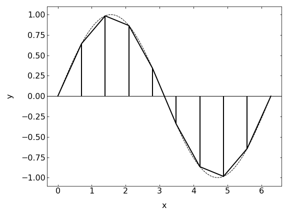

This page was generated from notebooks/L5/2_integration.ipynb.


Numerical Integration#
Our second topic today will be about numerical integration, which is useful in determining of course the integrals of functions at certain positions. Here we will only refer to 3 different methods with increasing accuracy.
[4]:
import numpy as np
import matplotlib.pyplot as plt
%matplotlib inline
%config InlineBackend.figure_format = 'retina'
plt.rcParams.update({'font.size': 12,
'axes.titlesize': 18,
'axes.labelsize': 16,
'axes.labelpad': 14,
'lines.linewidth': 1,
'lines.markersize': 10,
'xtick.labelsize' : 16,
'ytick.labelsize' : 16,
'xtick.top' : True,
'xtick.direction' : 'in',
'ytick.right' : True,
'ytick.direction' : 'in',})
Box method#

The simplest method for the numerical integration of a function \(f(x)\) is the box method. There you approximate the function in a certain intervall \(\Delta x\) by a horizontal line at the function value of the left edge of the intervall for example.
\begin{equation} \int_{a}^{b}f(x)\approx \sum_{i}f(x_{i})\Delta x \end{equation}
So lets write a function for that:
[5]:
def f(x):
return(x**2)
[6]:
def int_box(f,a,b,N):
x=np.linspace(a,b,N)
y=f(x)
return(np.sum((x[1]-x[0])*y))
[7]:
int_box(f,0,1,1000)
[7]:
0.3338340008343345
[11]:
acc=[]
for N in range(10,10000,100):
acc.append(int_box(f,0,1,N)-1/3)
plt.loglog(range(10,10000,100),acc)
[11]:
[<matplotlib.lines.Line2D at 0x7f5c48b3a3a0>]
Trapezoid method#
The trapezoid method is taking the next step of function approximation in the interval \(\Delta x\). It is approximating it with a linear function.
\begin{equation} \int_{a}^{b}f(x)dx=\sum_{i=1}^{N}\frac{f(x_i)+f(x_{i-1})}{2}\Delta x \end{equation}
which is actually the same as
\begin{equation} \int_{a}^{b}f(x)dx=\left[ \frac{f(x_{0}+f(x_{N}))}{2} +\sum_{i=1}^{N-1} f(x_{i})\right ]\Delta x \end{equation}
We will use the first formula for coding it, and you may try the second yourself.
[12]:
def int_trap(f,a,b,N):
x=np.linspace(a,b,N)
y=f(x)
return(np.sum((y[1:]+y[:-1])*(x[1]-x[0])/2))
[13]:
## value from the box method
int_box(f,0,1,100)
[13]:
0.3384008434513486
[14]:
## value from the tapez method
int_trap(f,0,1,100)
[14]:
0.33335033840084355
The trapez method therefore seems to give a better accuracy than the box method for the same number of steps.
Simpson method#
The Simpson method now continues with approximating the function now with a collection of parabolas.
\begin{equation} \int_{a}^{b}f(x)dx \approx \sum_{i=1}^{\frac{N-1}{2}}\int_{x_{2i-1}}^{x_{2i+1}}g_{i}(x)dx \end{equation}
where the function \(g_i(x)\) is a parabola
\begin{equation} g_{i}(x)=[A]x^2+[B]x+[C] \end{equation}
where the \([A],[B],[C]\) depends only on the function values at the edges of the slice.

After some extensive algebra, which we do not want to do in detail, we arrive at
\begin{equation} \int_{a}^{b}f(x)dx \approx\frac{\Delta x}{3}\sum_{i={\rm odd}}^{N-1}(f(x_{i-1})+f(x_{i})+f(x_{i+1})) \end{equation}
as a simple formula on how to calculate the integral of a function using the Simpson method. Note that this method requires N being an odd number, which generates an even number of slices. There is a correction for odd number of slices, which we do not consider here.
[15]:
def int_simp(f,a,b,N):
x=np.linspace(a,b,N)
y=f(x)
return(np.sum((y[0:-2:2]+4*y[1:-1:2]+y[2::2])*(x[1]-x[0])/3))
[16]:
## value from the tapez method
int_trap(f,0,1,100)
[16]:
0.33335033840084355
[17]:
## value from the box method
int_box(f,0,1,100)
[17]:
0.3384008434513486
[18]:
## value from the simpson method
## take care, N needs to be odd
int_simp(f,0,1,99)
[18]:
0.3333333333333332
It turns out, that the Simpson rule is indeed the best among the three methods we have considered. The error is the box method goes as \(\Delta x\), the one of the trapezoid method as \(\Delta x^2\), while the simpson method provides and accuracy going with \(\Delta x^4\). Thus doubling the number of integration points decreases the error by a factor of 16.